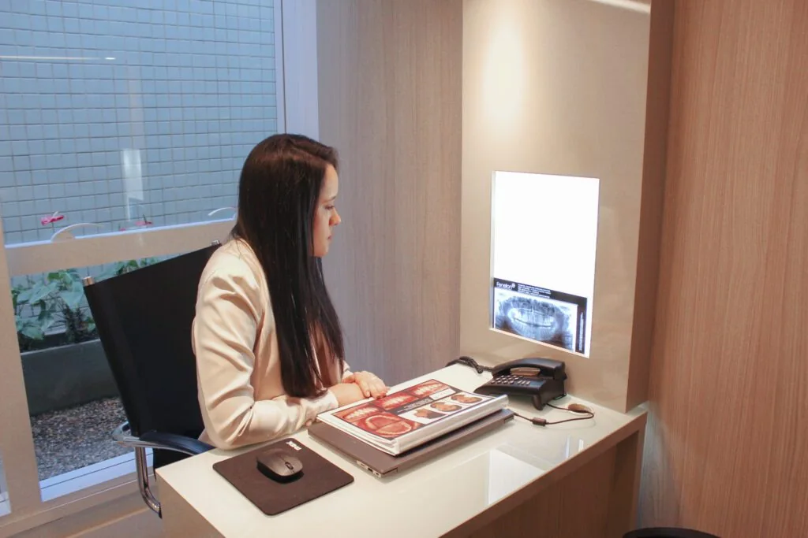

Reabilitação oral01
Implantes dentários
Volte a pensar nas possibilidades de um sorriso completo.
Conhecer tratamentoOdontologia especializada em Brasília, com atenção à sua saúde, à sua história e ao que faz você se sentir bem.

Saúde, função e estética caminham juntas. Explore as especialidades e encontre o próximo passo para a sua avaliação.
Volte a pensar nas possibilidades de um sorriso completo.
Conhecer tratamentoAlinhar os dentes com uma opção discreta para a sua rotina.
Conhecer tratamentoForma, proporção e harmonia, com planejamento individual.
Conhecer tratamentoConheça as possibilidades de clarear com orientação profissional.
Conhecer tratamentoReabilitação planejada para as necessidades da sua boca.
Conhecer tratamentoUm olhar atento às proporções e à sua individualidade.
Conhecer tratamentoAinda não sabe qual especialidade procurar?
A equipe pode orientar você
Desde dezembro de 2021, a Maison reúne diferentes especialidades em um espaço de atendimento na Asa Sul.
A nossa proposta começa na escuta: entender o que você precisa, conversar sobre possibilidades e construir um plano de cuidado individual.
Da primeira mensagem ao planejamento, espaço para perguntar, compreender e decidir.
Fale com a equipe pelo WhatsApp e consulte os horários disponíveis.
Na avaliação, converse sobre suas necessidades, expectativas e saúde bucal.
Esclareça as etapas, as alternativas e os cuidados indicados para o seu caso.
Se preferir, fale com nossa equipe. A primeira conversa pode acontecer pelo WhatsApp.
Tirar uma dúvidaClique em um dos botões de WhatsApp e converse diretamente com a equipe para consultar os horários disponíveis.
Não. Conte à equipe o que você procura. A avaliação profissional é o momento de entender as possibilidades para o seu caso.
A equipe confirma o atendimento conforme seu plano e o procedimento. Consulte a cobertura antes de agendar.
Na SGAS 915, lotes 69/70, sala 41, 2º subsolo do Centro Clínico Advance, Asa Sul, Brasília.
SGAS 915, lotes 69/70
Sala 41 · 2º subsolo
Centro Clínico Advance · Asa Sul, Brasília
Conte à nossa equipe o que você procura e consulte os horários para uma avaliação.
O cuidado começa aqui.